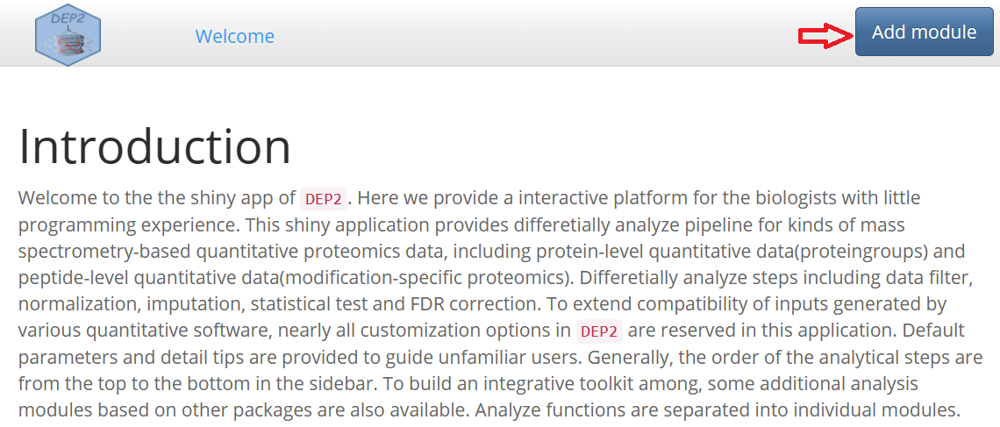
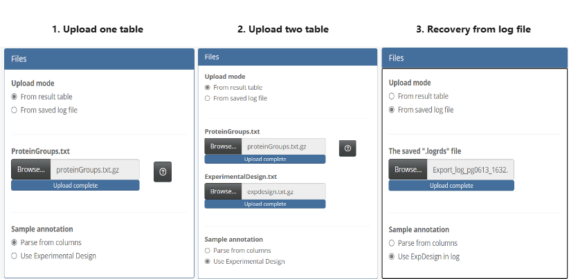
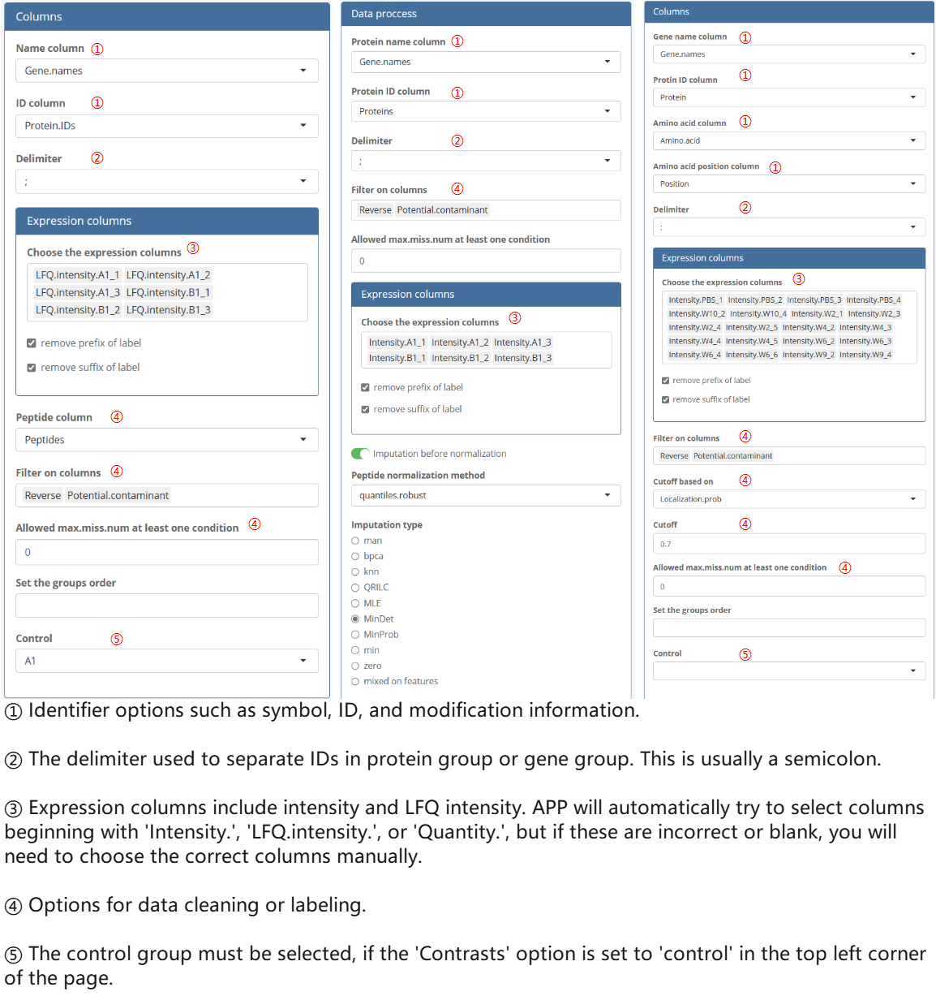
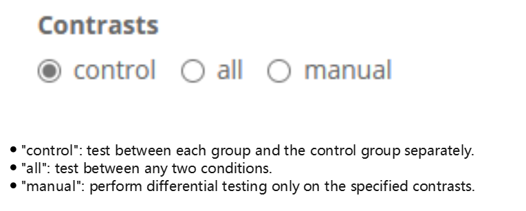
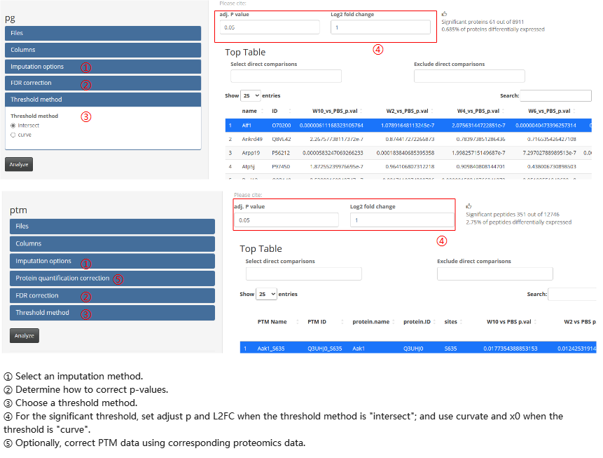
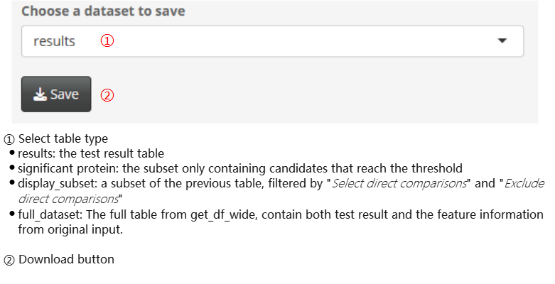
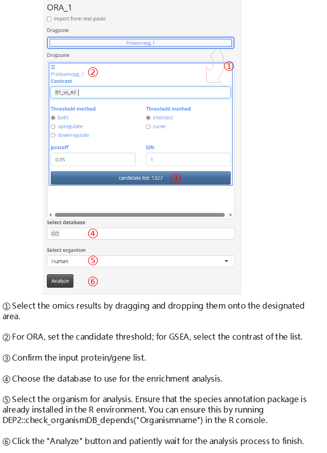
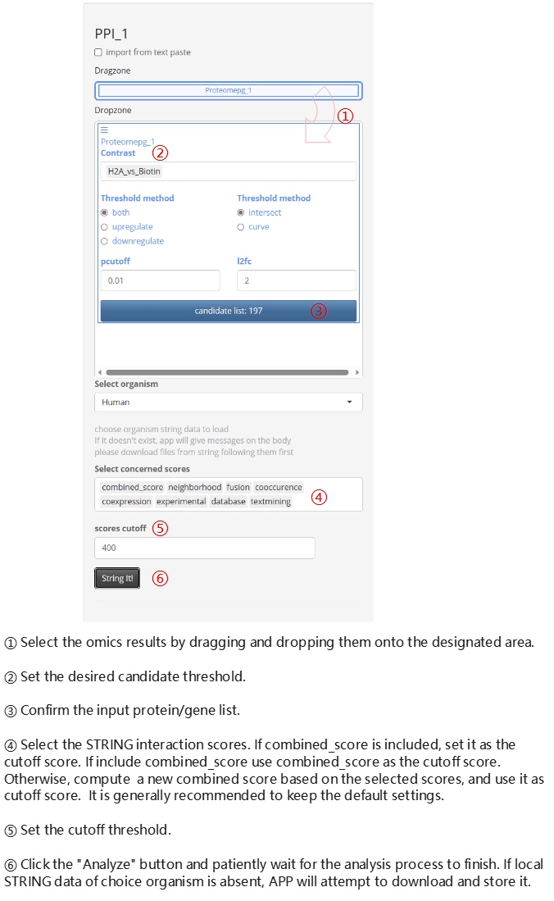

DEP2 Application Guide
Zhenhuan Feng
04_app_demo.rmdIntroduction
DEP2 features a user-friendly shiny application designed for researchers without programming experience. The application provides a easy-used GUI for conducting various analysss in DEP2. In this section, we will briefly introduce the app operation. Example tables can be found in this repository.

Snapshots of APP
Add Module
In DEP2, the shiny application follows a modular design, where different analysis functionalities are organized into separate modules. And modules can be import by click the “Add module” button.


The app currently comprises following modules:
-
Omics modules
-
Quantificated proteome (based on proteingroup quantification)
This module performs differential analysis of protein-level quantitative data, such as intensity, LFQ.intensity or quantity tables.
-
Quantificated proteome (based on peptide quantification)
This module analyzes differentially expressed proteins by aggregating protein quantities from peptide-level quantitative data.
-
Modification-specific proteome(modified peptide quantification)
This module analyzes differentially enriched modification-specific peptides using peptide quantity from modification-specific enrichment.
-
Transcriptome (RNA counts)
This module utilizes DEseq2 to perform differential analysis of parallel transcriptome data.
-
-
Post analysis modules
-
Over-representation analysis
This module performs biological functional enrichment using the function
test_ora. -
GSEA
This module utilizes the function
test_gseafor biological functional enrichment. -
Protein-protein interaction
This module constructs a Protein-Protein Interaction (PPI) network using a local STRING database through the function test_ppi. If local data is not available, the app will automatically attempt to download relevant data from an online database.
-
Timecourse cluster
This module applies a soft cluster to assays comprised of multiple groups.
-
Integrated analysis
This module allows for the comparison of results between omics experiments (note that PTM data is not yet supported).
-
Omics Analysis Module
- Upload table
Three type to upload table:
Uploading only an expression table, where the experiment design is generated from the expression column names. The column names must follow this format: (condition)_(repetition), for example, control_1, treat_1.
Uploading both an expression table and an experiment design table. The experiment design table should contain three columns, “label”, “condition” and “replicate”. (The example file is expdesign.txt also can be found in the example repository)
Uploading a saved logfile from a previous analysis and recovering the analysis options.
The application accepts tables in .txt (tab separated), .csv (comma separated) or .gz (compressed table) format. Log file is in a .logrds format and can be used for future reference.

- Set columns options
Specify the correct read-in options, including identifiers, expression values, and filter columns.

The options of removing suffix and removing prefix can affect the assay row names, and thus effect the ‘label’ columns in the ExperimentalDesign. For example, in this case, we remove the prefix, resulting in the following labels:
| Origin column name | label | condition | replicate |
|---|---|---|---|
| LFQ intensity A1_1 | A1_1 | A1 | 1 |
| LFQ intensity A1_2 | A1_2 | A1 | 2 |
| LFQ intensity A1_3 | A1_3 | A1 | 3 |
| LFQ intensity B1_1 | B1_1 | B1 | 1 |
| LFQ intensity B1_2 | B1_2 | B1 | 2 |
| LFQ intensity B1_3 | B1_3 | B1 | 3 |
Additionally, result files from other quantification software can also be imported using similar rules, but it is important to select the correct identifier and expression columns. The filter rule can be left blank as long as the features have already gone through quality control in the upstream software.
- Set analysis options
Select the desired test mode.

Other options can be adjusted in the option panels.

Besides, the peptide-protein aggregation pipeline contains two main calculate steps: aggregation and differential testing. These steps should be performed sequentially within the module.

- Result export
Save table

Save log file. The log file stores test options and intermediate results, which can be used to recover the analysis in future sessions. Please note that although the file types of the log files exported from four omics analysis modules are the same, they do have different data formats. Therefore, they can only be imported using the corresponding analysis module (for specific instructions, please refer to the previous section).
- Example
Post analysis
It is important to note that the functional analysis modules require
species annotation database packages in the R environment. Therefore,
the relevant packages must be installed before conducting functional
analysis for any organism. You can run the function
check_organismDB_depends in the console to check or install
the missing packages. Here is an example code:
## Parameter organism could one of "Chicken", "Human", "Mouse", "Fly", "Rat", "Yeast".
DEP2::check_organismDB_depends(organism = "Human")Annotation Enrichment (ORA or GSEA)
You can perform post-functional analyses directly on existing omics analysis datasets. However, it is essential to note that the app considers the identifiers as symbols. Therefore, selecting the gene symbol column as the ‘name’ in the column options is a prerequisite for post-analysis.

Protein-protein Interaction network
To enable the PPI modules after installing DEP2 for the first time,
you need to run the check_PPI_depends function in the
console before running the app.
DEP2::check_PPI_depends()
Reshape table
The Omics analysis modules only accept wide quantitative table, where
each row represents a features (such as a protein or a proteingroup),
and rows contain the identification information and quantification
information of samples. However, long-format tables are also widely used
in many cases, where each quantity value is represented in a separate
row. Therefore, DEP2 offers the reshape_long2wide function,
and APP also offers the Reshape modules for converting long table into
wide-format. Here, we demonstrate how to analyze the DIA-NN result file,
report.tsv, which is in the long-format.

For the import of other long-format tables, similar settings can be
referred to the above process. The module can also reshape data at the
peptide level. For more details, refer to the documentation of the
reshape_long2wide function and the import data
vignette.